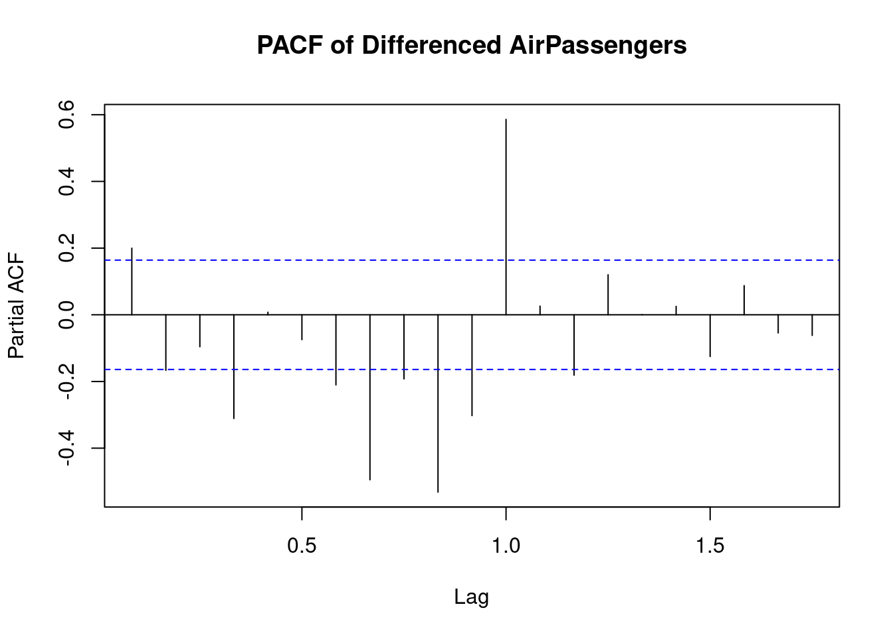
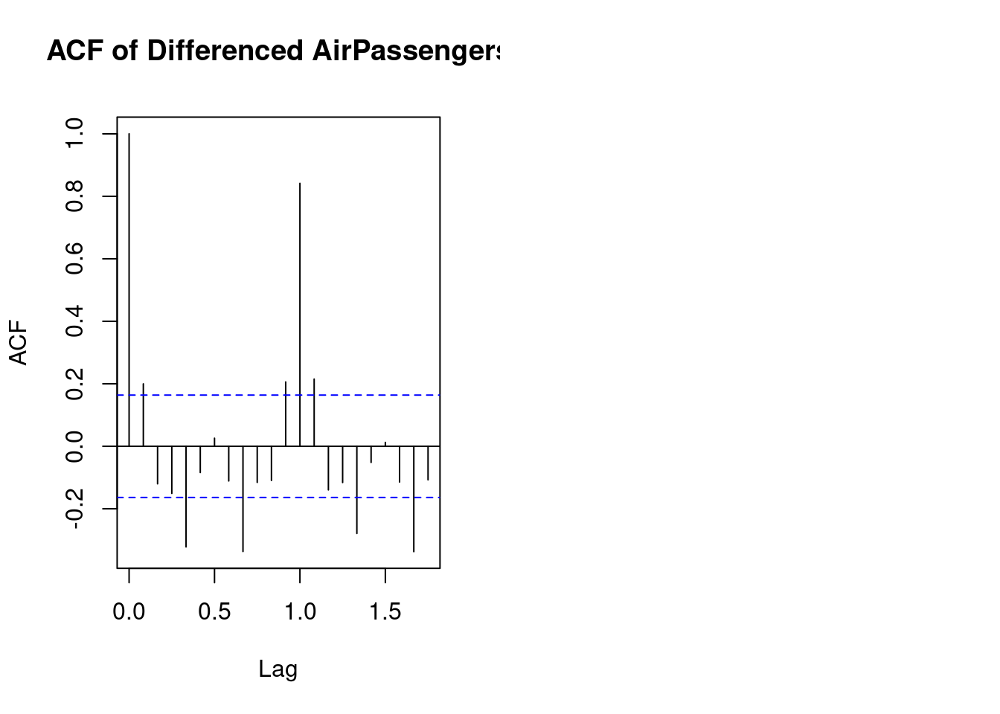

Chapter 7 Bioconductor
Bioconductor is a repository for high-quality, peer-reviewed software packages for the analysis and comprehension of high-throughput genomic data. It contained specific tools that handle, analyze and visualize data from high-throughput assays for instance ChIP-Seq, single-cell RNA-Seq and RNA-Seq. It provides data structures such as ExpressionSet,SummarizedExperiment, and GenomicRangesthat store and manipulate large scale genomic data. It also consists over 2000 packages just for data pre-processing, normalization, data analysis and visualization. Here are some of the popular packages in BioConductor has to offer;
Biostrings: For efficient manipulation of large biological sequences.DESeq2: For differential gene expression analysis based on count data.GenomicRanges: For representing and manipulating genomic intervals and variables defined along a genome.AnnotationDbi: For handling and querying biological annotation databases.edgeR: Another popular package for differential expression analysis, particularly for RNA-Seq data.
7.1 Installing BiocManager Package
To get started with Bioconductor, you need to install the BiocManager package, which facilitates the installation and management of Bioconductor packages. You can find detailed installation instructions in the official documentation.
Load the required libraries
After loading the necessary libraries, you can read sequence data into R. For instance, if you have sequence data stored in a multifasta file named multifasta_seq.txt, you can use the readDNAStringSet() function.
## Warning in .Call2("fasta_index", filexp_list, nrec, skip, seek.first.rec, :
## reading FASTA file data/multifasta_seq.txt: ignored 2545 invalid one-letter
## sequence codes## DNAStringSet object of length 6:
## width seq names
## [1] 844 MVVVSSCVNTTRTAYTNSTRGVY...KGCCSCGSCCKDDDSVKGVKHYT Spike_SARS_CoV2_2019
## [2] 842 MTTSGSDDRCTTDDVANYTHTSS...KGACSCGSCCKDDDSVKGVKHYT Spike_SARS_CoV
## [3] 841 MVVVSSCVNTTRTAYTNSSTRGV...KGCCSCGSCCKDDDSVKGVKHYT Spike_Bat_coronav...
## [4] 834 MVVVSSCVNTTRTGGYTNSSTRG...KGCCSCGSCCKDDDSVKGVKHYT Spike_Pangolin_co...
## [5] 846 MHAVNSCVNTGRAASTNSSRGVY...KGCCSCGSCCKDDDSVKGVKHYT Spike_Pangolin_co...
## [6] 835 MKVVATVSSYTKCDDDRTANTSS...KGACSCGSCCKDDDSVKGVKHYT Spike_WIV1_Bat_Co...Each genomic sequence can be viewed separately by indexing
## 844-letter DNAString object
## seq: MVVVSSCVNTTRTAYTNSTRGVYYDKVRSSVHSTDS...MVTMCCMTSCCSCKGCCSCGSCCKDDDSVKGVKHYT## 842-letter DNAString object
## seq: MTTSGSDDRCTTDDVANYTHTSSMRGVYYDRSDTYT...VMVTCCMTSCCSCKGACSCGSCCKDDDSVKGVKHYTConvert to character to inspect its content.
## [1] "MVVVSSCVNTTRTAYTNSTRGVYYDKVRSSVHSTDSNVTWHAHVSGTNGTKRDNVNDGVYASTKSNRGWGTTDSKTSVNNATNVVKVCCNDGVYYHKNNKSWMSRVYSSANNCTYVSMDGKGNKNRVKNDGYKYSKHTNVRDGSAVDGNTRTAHRSYTGDSSSGWTAGAAAYYVGYRTKYNNGTTDAVDCADSTKCTKSTVKGYTSNRVTSVRNTNCGVNATRASVYAWNRKRSNCVADYSVYNSASSTKCYGVSTKNDCTNVYADSVRGDVRAGTGKADYNYKDDTGCVAWNSNNDSKVGGNYNYYRRKSNKRDSTYAGSTCNGVGNCYSYGTNGVGYYRVVVSHAATVCGKKSTNVKNKCVNNNGTGTGVTSNKKGRDADTTDAVRDTDTCSGGVSVTGTNTSNVAVYDVNCTVVAHADTTWRVYSTGSNVTRAGCGAHVNNSYCDGAGCASYTTNSRRARSVASSAYTMSGANSVAYSNNSATNTSVTTVSMTKTSVDCTMYCGDSTCSNYGSCTNRATGAVDKNTVAVKYKTKDGGNSDSKSKRSDNKVTADAGKYGDCGDAARDCAKNGTVTDMAYTSAAGTTSGWTGAGAAAMMAYRNGGVTNVYNKANNSAGKDSSSTASAGKDVVNNAANTVKSSNGASSVNDSRDKVAVDRTGRSTYVTRAARASANAATKMSCVGSKRVDCGKGYHMSSAHGVVHVTYVAKNTTAACHDGKAHRGVVSNGTHWVTRNYTTDNTVSGNCDVVGVNNTVYDDSKDKYKNHTSDVDGDSGNASVVNKDRNVAKNNSDGKYYKWWYWGAGAVMVTMCCMTSCCSCKGCCSCGSCCKDDDSVKGVKHYT"The length function from base R is used to count the number of genomic sequences.
## [1] 6- Names of the sequences
## [1] "Spike_SARS_CoV2_2019" "Spike_SARS_CoV"
## [3] "Spike_Bat_coronavirus_RaTG13" "Spike_Pangolin_coronavirus_GX"
## [5] "Spike_Pangolin_coronavirus_GD" "Spike_WIV1_Bat_Coronovirus"- view the first 6 sequences
## DNAStringSet object of length 6:
## width seq names
## [1] 844 MVVVSSCVNTTRTAYTNSTRGVY...KGCCSCGSCCKDDDSVKGVKHYT Spike_SARS_CoV2_2019
## [2] 842 MTTSGSDDRCTTDDVANYTHTSS...KGACSCGSCCKDDDSVKGVKHYT Spike_SARS_CoV
## [3] 841 MVVVSSCVNTTRTAYTNSSTRGV...KGCCSCGSCCKDDDSVKGVKHYT Spike_Bat_coronav...
## [4] 834 MVVVSSCVNTTRTGGYTNSSTRG...KGCCSCGSCCKDDDSVKGVKHYT Spike_Pangolin_co...
## [5] 846 MHAVNSCVNTGRAASTNSSRGVY...KGCCSCGSCCKDDDSVKGVKHYT Spike_Pangolin_co...
## [6] 835 MKVVATVSSYTKCDDDRTANTSS...KGACSCGSCCKDDDSVKGVKHYT Spike_WIV1_Bat_Co...- Checking the reverse compliment of sequence
## 6-letter DNAString object
## seq: ARDMBC## 6-letter DNAString object
## seq: SSBBBK## [1] "ARDMBCMBSHHHMGGSCGSGGCMGSGGSAKGGKABKBTCTCWRWWMRRMCHSNNMTBNYHMNBBSTNCSHCHBHSADNMRMHMSHHRBANNBCBBHGNCSBANHAARNYABWDACNSBBCYDTMCHDGTTAANMTBRABDBBCDTSSKDRCMCGHBYMSCBGSKMATTNTSTYTTYABRASYCAYHBTBMHYSHNBSSTCNSSMBANTTNNBBHMCTSTASSSHMCTSNNTMNRBNABCCNYRTKKTTTCTCAWCSAACTTSARTKHABACNMTGHYTTHCGHCRMCTHTABMNHSYMSMSHSNCCHMAMRMBTBANMHBTCATYNAGSCRNSGASHCGRKAGHBSAMAKSBAABSANATSNNSRTBSNTCSKARTSSTBSYTYYSNAARSTGCTCHGRSNNBDTCGCTYABNSCASRBYWAAHTDTBBAGNBHRBTBNSANACABSBCCSGAHAHYBTHAAHTHYCMMNSABCACACNNNBGMNMBNASMMCGBATTDSBBBYRRCBCNACRSRGNCBCNGASCTRASHYMNSMYYRRNRNCCBMSHNNSNWTBGCAHHMRNRHTMCACTYBHCYBSHTRBNAGHNMASBCRGMASSTSNRBSRHTBGNSYMYNWTRBSTYATNBCGNANYBSABYNSARCMBASMAGMASHTGHBTHAACNNRMAYRCBRRTTTCTAWCSSSHCARSYDTAYANCHBTSCHYBNADMSRMRCHNMBYNMNCMCHKSBRAGNNTSSRBYSKWSMNNMDRRBCHNGGBMBBNATNNBSAMSHAACWCYNSMASTRBCHNBNHYMACNACSBDTDWABNSHASDBSSYBMHRRBCYASNARTAYAANBGSSBBBK"- Sequence composition -default - calculate the DNA composition
## A C G T M R W S Y K V H D B N - + .
## [1,] 79 40 82 97 14 42 12 99 54 61 97 17 62 0 88 0 0 0
## [2,] 84 39 78 100 20 39 11 96 54 60 91 15 74 0 81 0 0 0
## [3,] 80 40 82 98 14 39 12 97 55 63 94 18 64 0 85 0 0 0
## [4,] 76 40 85 98 15 41 12 94 55 61 97 17 61 0 82 0 0 0
## [5,] 82 40 81 99 15 40 12 100 60 58 95 14 60 0 90 0 0 0
## [6,] 82 39 77 93 17 42 11 98 50 60 93 15 72 0 86 0 0 0- Specific composition - lets say we wanna look for A, T, G, C and N
## A T G C N
## [1,] 79 97 82 40 88
## [2,] 84 100 78 39 81
## [3,] 80 98 82 40 85
## [4,] 76 98 85 40 82
## [5,] 82 99 81 40 90
## [6,] 82 93 77 39 86Computing the GC Content
## G|C
## [1,] 0.1445498
## [2,] 0.1389549
## [3,] 0.1450654
## [4,] 0.1498801
## [5,] 0.1430260
## [6,] 0.1389222Calculate the mean of Gc content
## [1] 0.1433997- Standard deviation
## [1] 0.004148188## [1] 0.1389222 0.1498801- Which GC has the maximum content
## DNAStringSet object of length 1:
## width seq names
## [1] 834 MVVVSSCVNTTRTGGYTNSSTRG...KGCCSCGSCCKDDDSVKGVKHYT Spike_Pangolin_co...7.2 Searching and Analyzing the strings
A biologist can search for specific substrings within the sequences and analyze their positions and characteristics for instance;
- Search for substrings- in this case we search for
"GAATTC"substring.
## [1] 0 0 0 0 0 0## [1] 1 0 1 1 1 0- Finding the position of substrings
## MIndex object of length 6
## $Spike_SARS_CoV2_2019
## IRanges object with 0 ranges and 0 metadata columns:
## start end width
## <integer> <integer> <integer>
##
## $Spike_SARS_CoV
## IRanges object with 0 ranges and 0 metadata columns:
## start end width
## <integer> <integer> <integer>
##
## $Spike_Bat_coronavirus_RaTG13
## IRanges object with 0 ranges and 0 metadata columns:
## start end width
## <integer> <integer> <integer>
##
## ...
## <3 more elements>- Translate
## [1] !
## [2] !=
## [3] [
## [4] [[
## [5] [[<-
## [6] [<-
## [7] %in%
## [8] <
## [9] <=
## [10] ==
## [11] >
## [12] >=
## [13] $
## [14] $<-
## [15] aggregate
## [16] alphabetFrequency
## [17] anyDuplicated
## [18] anyNA
## [19] append
## [20] as.character
## [21] as.complex
## [22] as.data.frame
## [23] as.env
## [24] as.factor
## [25] as.integer
## [26] as.list
## [27] as.logical
## [28] as.matrix
## [29] as.numeric
## [30] as.raw
## [31] as.vector
## [32] bindROWS
## [33] by
## [34] c
## [35] cbind
## [36] chartr
## [37] coerce
## [38] compact
## [39] compareStrings
## [40] complement
## [41] consensusMatrix
## [42] consensusString
## [43] countOverlaps
## [44] countPattern
## [45] countPDict
## [46] dinucleotideFrequencyTest
## [47] do.call
## [48] droplevels
## [49] duplicated
## [50] elementMetadata
## [51] elementMetadata<-
## [52] elementNROWS
## [53] elementType
## [54] eval
## [55] expand
## [56] expand.grid
## [57] extractAt
## [58] extractROWS
## [59] FactorToClass
## [60] Filter
## [61] findOverlaps
## [62] getListElement
## [63] hasOnlyBaseLetters
## [64] head
## [65] ifelse2
## [66] intersect
## [67] is.na
## [68] is.unsorted
## [69] isEmpty
## [70] isMatchingEndingAt
## [71] isMatchingStartingAt
## [72] lapply
## [73] length
## [74] lengths
## [75] letterFrequency
## [76] make_XStringSet_from_strings
## [77] match
## [78] matchPattern
## [79] matchPDict
## [80] mcols
## [81] mcols<-
## [82] merge
## [83] mergeROWS
## [84] metadata
## [85] metadata<-
## [86] mstack
## [87] names
## [88] names<-
## [89] nchar
## [90] neditEndingAt
## [91] neditStartingAt
## [92] normalizeSingleBracketReplacementValue
## [93] nucleotideFrequencyAt
## [94] oligonucleotideFrequency
## [95] order
## [96] overlapsAny
## [97] PairwiseAlignments
## [98] PairwiseAlignmentsSingleSubject
## [99] palindromeArmLength
## [100] parallel_slot_names
## [101] parallelVectorNames
## [102] pcompare
## [103] pcompareRecursively
## [104] PDict
## [105] PWM
## [106] rank
## [107] rbind
## [108] Reduce
## [109] relist
## [110] relistToClass
## [111] rename
## [112] rep
## [113] rep.int
## [114] replaceAt
## [115] replaceLetterAt
## [116] replaceROWS
## [117] rev
## [118] revElements
## [119] reverse
## [120] reverseComplement
## [121] sapply
## [122] selfmatch
## [123] seqinfo
## [124] seqinfo<-
## [125] seqlevelsInUse
## [126] seqtype
## [127] seqtype<-
## [128] setdiff
## [129] setequal
## [130] setListElement
## [131] shiftApply
## [132] show
## [133] showAsCell
## [134] sort
## [135] split
## [136] split<-
## [137] stack
## [138] stringDist
## [139] strsplit
## [140] subseq
## [141] subseq<-
## [142] subset
## [143] subsetByOverlaps
## [144] summary
## [145] table
## [146] tail
## [147] tapply
## [148] threebands
## [149] toString
## [150] transform
## [151] translate
## [152] trimLRPatterns
## [153] twoWayAlphabetFrequency
## [154] union
## [155] unique
## [156] uniqueLetters
## [157] unlist
## [158] unname
## [159] unsplit
## [160] unstrsplit
## [161] updateObject
## [162] values
## [163] values<-
## [164] vcountPattern
## [165] vcountPDict
## [166] vmatchPattern
## [167] vwhichPDict
## [168] which.isMatchingEndingAt
## [169] which.isMatchingStartingAt
## [170] whichPDict
## [171] width
## [172] window
## [173] window<-
## [174] windows
## [175] with
## [176] within
## [177] xtabs
## [178] xtfrm
## [179] xvcopy
## [180] zipdown
## see '?methods' for accessing help and source code7.3 Using seqinr
Another useful library in sequence analysis is seqinr.
After installing the library by invoking install.packages("seqinr") to the console, load it to the workspace
Reading the fasta file containing the protein sequence using the read.fasta function.
## List of 6
## $ Spike_SARS_CoV2_2019 : 'SeqFastaAA' chr [1:1273] "M" "F" "V" "F" ...
## ..- attr(*, "name")= chr "Spike_SARS_CoV2_2019"
## ..- attr(*, "Annot")= chr ">Spike_SARS_CoV2_2019"
## $ Spike_SARS_CoV : 'SeqFastaAA' chr [1:1255] "M" "F" "I" "F" ...
## ..- attr(*, "name")= chr "Spike_SARS_CoV"
## ..- attr(*, "Annot")= chr ">Spike_SARS_CoV"
## $ Spike_Bat_coronavirus_RaTG13 : 'SeqFastaAA' chr [1:1269] "M" "F" "V" "F" ...
## ..- attr(*, "name")= chr "Spike_Bat_coronavirus_RaTG13"
## ..- attr(*, "Annot")= chr ">Spike_Bat_coronavirus_RaTG13"
## $ Spike_Pangolin_coronavirus_GX: 'SeqFastaAA' chr [1:1269] "M" "F" "V" "F" ...
## ..- attr(*, "name")= chr "Spike_Pangolin_coronavirus_GX"
## ..- attr(*, "Annot")= chr ">Spike_Pangolin_coronavirus_GX"
## $ Spike_Pangolin_coronavirus_GD: 'SeqFastaAA' chr [1:1265] "M" "L" "F" "F" ...
## ..- attr(*, "name")= chr "Spike_Pangolin_coronavirus_GD"
## ..- attr(*, "Annot")= chr ">Spike_Pangolin_coronavirus_GD"
## $ Spike_WIV1_Bat_Coronovirus : 'SeqFastaAA' chr [1:1256] "M" "K" "L" "L" ...
## ..- attr(*, "name")= chr "Spike_WIV1_Bat_Coronovirus"
## ..- attr(*, "Annot")= chr ">Spike_WIV1_Bat_Coronovirus"Count the number of sequences
## [1] "Number of sequences = 6"- Names of the sequences
## [1] "Spike_SARS_CoV2_2019" "Spike_SARS_CoV"
## [3] "Spike_Bat_coronavirus_RaTG13" "Spike_Pangolin_coronavirus_GX"
## [5] "Spike_Pangolin_coronavirus_GD" "Spike_WIV1_Bat_Coronovirus"- Annotation of sequences
## [[1]]
## [1] ">Spike_SARS_CoV2_2019"
##
## [[2]]
## [1] ">Spike_SARS_CoV"
##
## [[3]]
## [1] ">Spike_Bat_coronavirus_RaTG13"
##
## [[4]]
## [1] ">Spike_Pangolin_coronavirus_GX"
##
## [[5]]
## [1] ">Spike_Pangolin_coronavirus_GD"
##
## [[6]]
## [1] ">Spike_WIV1_Bat_Coronovirus"- Length of individual sequences
## [1] 1273 1255 1269 1269 1265 1256- Protein statistics

## $Compo
##
## * A C D E F G H I K L M N P Q R S T V W
## 0 79 40 62 48 77 82 17 76 61 108 14 88 58 62 42 99 97 97 12
## Y
## 54
##
## $Prop
## $Prop$Tiny
## [1] 0.3118617
##
## $Prop$Small
## [1] 0.5514533
##
## $Prop$Aliphatic
## [1] 0.2207384
##
## $Prop$Aromatic
## [1] 0.1256874
##
## $Prop$Non.polar
## [1] 0.5475255
##
## $Prop$Polar
## [1] 0.4524745
##
## $Prop$Charged
## [1] 0.1806756
##
## $Prop$Basic
## [1] 0.09426551
##
## $Prop$Acidic
## [1] 0.08641005
##
##
## $Pi
## [1] 6.236478It gives the type of proteins
## [1] "Spike_SARS_CoV2_2019"
## $Compo
##
## * A C D E F G H I K L M N P Q R S T V W
## 0 79 40 62 48 77 82 17 76 61 108 14 88 58 62 42 99 97 97 12
## Y
## 54
##
## $Prop
## $Prop$Tiny
## [1] 0.3118617
##
## $Prop$Small
## [1] 0.5514533
##
## $Prop$Aliphatic
## [1] 0.2207384
##
## $Prop$Aromatic
## [1] 0.1256874
##
## $Prop$Non.polar
## [1] 0.5475255
##
## $Prop$Polar
## [1] 0.4524745
##
## $Prop$Charged
## [1] 0.1806756
##
## $Prop$Basic
## [1] 0.09426551
##
## $Prop$Acidic
## [1] 0.08641005
##
##
## $Pi
## [1] 6.236478
##
## [1] "Spike_SARS_CoV"
## $Compo
##
## * A C D E F G H I K L M N P Q R S T V W
## 0 84 39 74 42 83 78 15 77 60 99 20 81 57 55 39 96 100 91 11
## Y
## 54
##
## $Prop
## $Prop$Tiny
## [1] 0.3163347
##
## $Prop$Small
## [1] 0.5577689
##
## $Prop$Aliphatic
## [1] 0.212749
##
## $Prop$Aromatic
## [1] 0.1298805
##
## $Prop$Non.polar
## [1] 0.5521912
##
## $Prop$Polar
## [1] 0.4478088
##
## $Prop$Charged
## [1] 0.1832669
##
## $Prop$Basic
## [1] 0.09083665
##
## $Prop$Acidic
## [1] 0.09243028
##
##
## $Pi
## [1] 5.510607
##
## [1] "Spike_Bat_coronavirus_RaTG13"
## $Compo
##
## * A C D E F G H I K L M N P Q R S T V W
## 0 80 40 64 47 75 82 18 79 63 109 14 85 58 60 39 97 98 94 12
## Y
## 55
##
## $Prop
## $Prop$Tiny
## [1] 0.3128448
##
## $Prop$Small
## [1] 0.5500394
##
## $Prop$Aliphatic
## [1] 0.2222222
##
## $Prop$Aromatic
## [1] 0.1260835
##
## $Prop$Non.polar
## [1] 0.5500394
##
## $Prop$Polar
## [1] 0.4499606
##
## $Prop$Charged
## [1] 0.1820331
##
## $Prop$Basic
## [1] 0.09456265
##
## $Prop$Acidic
## [1] 0.08747045
##
##
## $Pi
## [1] 6.11311
##
## [1] "Spike_Pangolin_coronavirus_GX"
## $Compo
##
## * A C D E F G H I K L M N P Q R S T V W
## 0 76 40 61 48 75 85 17 79 61 113 15 82 56 62 41 94 98 97 12
## Y
## 55
##
## $Prop
## $Prop$Tiny
## [1] 0.3096927
##
## $Prop$Small
## [1] 0.5429472
##
## $Prop$Aliphatic
## [1] 0.2277384
##
## $Prop$Aromatic
## [1] 0.1252955
##
## $Prop$Non.polar
## [1] 0.5539795
##
## $Prop$Polar
## [1] 0.4444444
##
## $Prop$Charged
## [1] 0.179669
##
## $Prop$Basic
## [1] 0.09377463
##
## $Prop$Acidic
## [1] 0.08589441
##
##
## $Pi
## [1] 6.235931
##
## [1] "Spike_Pangolin_coronavirus_GD"
## $Compo
##
## * A C D E F G H I K L M N P Q R S T V W
## 0 82 40 60 48 76 81 14 80 58 103 15 90 54 58 40 100 99 95 12
## Y
## 60
##
## $Prop
## $Prop$Tiny
## [1] 0.3177866
##
## $Prop$Small
## [1] 0.5541502
##
## $Prop$Aliphatic
## [1] 0.2197628
##
## $Prop$Aromatic
## [1] 0.1280632
##
## $Prop$Non.polar
## [1] 0.5517787
##
## $Prop$Polar
## [1] 0.4482213
##
## $Prop$Charged
## [1] 0.173913
##
## $Prop$Basic
## [1] 0.08853755
##
## $Prop$Acidic
## [1] 0.08537549
##
##
## $Pi
## [1] 5.900948
##
## [1] "Spike_WIV1_Bat_Coronovirus"
## $Compo
##
## * A C D E F G H I K L M N P Q R S T V W
## 0 82 39 72 43 83 77 15 77 60 102 17 86 62 54 42 98 93 93 11
## Y
## 50
##
## $Prop
## $Prop$Tiny
## [1] 0.3097134
##
## $Prop$Small
## [1] 0.5589172
##
## $Prop$Aliphatic
## [1] 0.2165605
##
## $Prop$Aromatic
## [1] 0.1265924
##
## $Prop$Non.polar
## [1] 0.5517516
##
## $Prop$Polar
## [1] 0.4482484
##
## $Prop$Charged
## [1] 0.1847134
##
## $Prop$Basic
## [1] 0.09315287
##
## $Prop$Acidic
## [1] 0.09156051
##
##
## $Pi
## [1] 5.739146- Show commands in seqinr
## [1] "a" "aaa"
## [3] "AAstat" "acnucclose"
## [5] "acnucopen" "al2bp"
## [7] "alllistranks" "alr"
## [9] "amb" "as.alignment"
## [11] "as.matrix.alignment" "as.SeqAcnucWeb"
## [13] "as.SeqFastaAA" "as.SeqFastadna"
## [15] "as.SeqFrag" "autosocket"
## [17] "baselineabif" "bma"
## [19] "c2s" "cai"
## [21] "cfl" "choosebank"
## [23] "circle" "clfcd"
## [25] "clientid" "closebank"
## [27] "col2alpha" "comp"
## [29] "computePI" "con"
## [31] "consensus" "count"
## [33] "countfreelists" "countsubseqs"
## [35] "crelistfromclientdata" "css"
## [37] "dia.bactgensize" "dia.db.growth"
## [39] "dist.alignment" "dotchart.uco"
## [41] "dotPlot" "draw.oriloc"
## [43] "draw.rearranged.oriloc" "draw.recstat"
## [45] "exseq" "extract.breakpoints"
## [47] "extractseqs" "fastacc"
## [49] "gb2fasta" "gbk2g2"
## [51] "gbk2g2.euk" "GC"
## [53] "GC1" "GC2"
## [55] "GC3" "GCpos"
## [57] "get.db.growth" "getAnnot"
## [59] "getAnnot.default" "getAnnot.list"
## [61] "getAnnot.logical" "getAnnot.qaw"
## [63] "getAnnot.SeqAcnucWeb" "getAnnot.SeqFastaAA"
## [65] "getAnnot.SeqFastadna" "getAttributsocket"
## [67] "getFrag" "getFrag.character"
## [69] "getFrag.default" "getFrag.list"
## [71] "getFrag.logical" "getFrag.qaw"
## [73] "getFrag.SeqAcnucWeb" "getFrag.SeqFastaAA"
## [75] "getFrag.SeqFastadna" "getFrag.SeqFrag"
## [77] "getKeyword" "getKeyword.default"
## [79] "getKeyword.list" "getKeyword.logical"
## [81] "getKeyword.qaw" "getKeyword.SeqAcnucWeb"
## [83] "getLength" "getLength.character"
## [85] "getLength.default" "getLength.list"
## [87] "getLength.logical" "getLength.qaw"
## [89] "getLength.SeqAcnucWeb" "getLength.SeqFastaAA"
## [91] "getLength.SeqFastadna" "getLength.SeqFrag"
## [93] "getlistrank" "getliststate"
## [95] "getLocation" "getLocation.default"
## [97] "getLocation.list" "getLocation.logical"
## [99] "getLocation.qaw" "getLocation.SeqAcnucWeb"
## [101] "getName" "getName.default"
## [103] "getName.list" "getName.logical"
## [105] "getName.qaw" "getName.SeqAcnucWeb"
## [107] "getName.SeqFastaAA" "getName.SeqFastadna"
## [109] "getName.SeqFrag" "getNumber.socket"
## [111] "getSequence" "getSequence.character"
## [113] "getSequence.default" "getSequence.list"
## [115] "getSequence.logical" "getSequence.qaw"
## [117] "getSequence.SeqAcnucWeb" "getSequence.SeqFastaAA"
## [119] "getSequence.SeqFastadna" "getSequence.SeqFrag"
## [121] "getTrans" "getTrans.character"
## [123] "getTrans.default" "getTrans.list"
## [125] "getTrans.logical" "getTrans.qaw"
## [127] "getTrans.SeqAcnucWeb" "getTrans.SeqFastadna"
## [129] "getTrans.SeqFrag" "getType"
## [131] "gfrag" "ghelp"
## [133] "gln" "glr"
## [135] "gls" "is.SeqAcnucWeb"
## [137] "is.SeqFastaAA" "is.SeqFastadna"
## [139] "is.SeqFrag" "isenum"
## [141] "isn" "kaks"
## [143] "kdb" "knowndbs"
## [145] "lseqinr" "modifylist"
## [147] "move" "mv"
## [149] "n2s" "oriloc"
## [151] "parser.socket" "peakabif"
## [153] "permutation" "pga"
## [155] "plot.SeqAcnucWeb" "plotabif"
## [157] "plotladder" "plotPanels"
## [159] "pmw" "prepgetannots"
## [161] "prettyseq" "print.qaw"
## [163] "print.SeqAcnucWeb" "query"
## [165] "quitacnuc" "read.abif"
## [167] "read.alignment" "read.fasta"
## [169] "readBins" "readfirstrec"
## [171] "readPanels" "readsmj"
## [173] "rearranged.oriloc" "recstat"
## [175] "residuecount" "reverse.align"
## [177] "rho" "rot13"
## [179] "s2c" "s2n"
## [181] "savelist" "SEQINR.UTIL"
## [183] "setlistname" "splitseq"
## [185] "stresc" "stutterabif"
## [187] "summary.SeqFastaAA" "summary.SeqFastadna"
## [189] "swap" "syncodons"
## [191] "synsequence" "tablecode"
## [193] "test.co.recstat" "test.li.recstat"
## [195] "translate" "trimSpace"
## [197] "uco" "ucoweight"
## [199] "where.is.this.acc" "words"
## [201] "words.pos" "write.fasta"
## [203] "zscore"7.4 Using Short Read
This library can be installed by invoking the BiocManager::install("ShortRead") command to the console.
load the library
- Reading the fastq sequences
## class: ShortReadQ
## length: 5 reads; width: 149..166 cycles- Preview of first 3 sequences
## class: ShortReadQ
## length: 3 reads; width: 149 161 cycles- Sequence information
## DNAStringSet object of length 5:
## width seq
## [1] 149 CGCAAGCGAGTTAAGCAGTCTGTCCAAAGCATGT...TTATCCACATCTGTCATGACGATTTCGTTTGAT
## [2] 161 CGTTATCAGAGAGCTCTTGTCGCAAGCGAGTTAA...CTACCAAGTTATCCACATCTGTCATGACGATTT
## [3] 161 AGCGAGTTAAGCAGTCTGTCCAAAGCATGTGTAT...GACGATTTCGTTTGATTTTGCCTTAAAAAGAAA
## [4] 166 GACCCCTTCTCATCAGGAAGGGTTAATCTTTAAA...TGGATTCGCCCTTTAGTAGCTGAAGAAGTAGAG
## [5] 166 CCCCTTCTCATCAGGAAGGGTTAATCTTTAAATG...GATTCGCCCTTTAGTAGCTGAAGAAGTAGAGGGSubset the sequence from second to fifth
## DNAStringSet object of length 4:
## width seq
## [1] 161 CGTTATCAGAGAGCTCTTGTCGCAAGCGAGTTAA...CTACCAAGTTATCCACATCTGTCATGACGATTT
## [2] 161 AGCGAGTTAAGCAGTCTGTCCAAAGCATGTGTAT...GACGATTTCGTTTGATTTTGCCTTAAAAAGAAA
## [3] 166 GACCCCTTCTCATCAGGAAGGGTTAATCTTTAAA...TGGATTCGCCCTTTAGTAGCTGAAGAAGTAGAG
## [4] 166 CCCCTTCTCATCAGGAAGGGTTAATCTTTAAATG...GATTCGCCCTTTAGTAGCTGAAGAAGTAGAGGGInspect the quality of the sequence
## class: FastqQuality
## quality:
## BStringSet object of length 5:
## width seq
## [1] 149 CCCC>CHDBBC<=8=DCCCDDDCB>BG?GGEDB=...C@B==8=CDDDDDDDDDC==<C@C8<<DD=BCE
## [2] 161 <CE:@C=<<=DDDCBBC><<<CDD>BCEHGI>C>...999929-39:>BE>BBA@ADEC?>?AAA999C;
## [3] 161 DDEDEEEAE@DD=>=:==BB?BG>FDEDCCBBBB...D>///99*//::4:<BBB6BD-2--555-5:::
## [4] 166 CCCLL;E@DE>>=DDDAE@EEBE@@?CCEE?EE?...BB@DDAD8884;C<CFGGE?@?C?CC=BDEEEA
## [5] 166 666/6:::=BBCCBACADD6@:D@DDEE>DD>DE...>BDAC58;6:D>DDDDGEEBB<CD@DDDEEED>- Number of sequence in the file
## [1] 5- Length of reads
## [1] 149 161 161 166 166- generating the summary of fasta sequences
## BStringSet object of length 5:
## width seq
## [1] 17 OLVOG:01110:02677
## [2] 17 OLVOG:01219:01823
## [3] 17 OLVOG:01240:02825
## [4] 17 OLVOG:02464:02160
## [5] 17 OLVOG:02703:02334## DNAStringSet object of length 5:
## width seq
## [1] 149 CGCAAGCGAGTTAAGCAGTCTGTCCAAAGCATGT...TTATCCACATCTGTCATGACGATTTCGTTTGAT
## [2] 161 CGTTATCAGAGAGCTCTTGTCGCAAGCGAGTTAA...CTACCAAGTTATCCACATCTGTCATGACGATTT
## [3] 161 AGCGAGTTAAGCAGTCTGTCCAAAGCATGTGTAT...GACGATTTCGTTTGATTTTGCCTTAAAAAGAAA
## [4] 166 GACCCCTTCTCATCAGGAAGGGTTAATCTTTAAA...TGGATTCGCCCTTTAGTAGCTGAAGAAGTAGAG
## [5] 166 CCCCTTCTCATCAGGAAGGGTTAATCTTTAAATG...GATTCGCCCTTTAGTAGCTGAAGAAGTAGAGGG- Seq length - we can generate the sequence lenght by converting it to a dataframe
## fq_reads@ranges@width
## 1 149
## 2 161
## 3 161
## 4 166
## 5 166- Quality scores
## class: FastqQuality
## quality:
## BStringSet object of length 5:
## width seq
## [1] 149 CCCC>CHDBBC<=8=DCCCDDDCB>BG?GGEDB=...C@B==8=CDDDDDDDDDC==<C@C8<<DD=BCE
## [2] 161 <CE:@C=<<=DDDCBBC><<<CDD>BCEHGI>C>...999929-39:>BE>BBA@ADEC?>?AAA999C;
## [3] 161 DDEDEEEAE@DD=>=:==BB?BG>FDEDCCBBBB...D>///99*//::4:<BBB6BD-2--555-5:::
## [4] 166 CCCLL;E@DE>>=DDDAE@EEBE@@?CCEE?EE?...BB@DDAD8884;C<CFGGE?@?C?CC=BDEEEA
## [5] 166 666/6:::=BBCCBACADD6@:D@DDEE>DD>DE...>BDAC58;6:D>DDDDGEEBB<CD@DDDEEED>Convert the scores to matrix and see as real numbers
## [,1] [,2] [,3] [,4] [,5] [,6] [,7] [,8] [,9] [,10] [,11] [,12] [,13] [,14]
## [1,] 34 34 34 34 29 34 39 35 33 33 34 27 28 23
## [2,] 27 34 36 25 31 34 28 27 27 28 35 35 35 34
## [3,] 35 35 36 35 36 36 36 32 36 31 35 35 28 29
## [4,] 34 34 34 43 43 26 36 31 35 36 29 29 28 35
## [5,] 21 21 21 14 21 25 25 25 28 33 33 34 34 33
## [,15] [,16] [,17] [,18] [,19] [,20] [,21] [,22] [,23] [,24] [,25] [,26]
## [1,] 28 35 34 34 34 35 35 35 34 33 29 33
## [2,] 33 33 34 29 27 27 27 34 35 35 29 33
## [3,] 28 25 28 28 33 33 30 33 38 29 37 35
## [4,] 35 35 32 36 31 36 36 33 36 31 31 30
## [5,] 32 34 32 35 35 21 31 25 35 31 35 35
## [,27] [,28] [,29] [,30] [,31] [,32] [,33] [,34] [,35] [,36] [,37] [,38]
## [1,] 38 30 38 38 36 35 33 28 28 28 35 36
## [2,] 34 36 39 38 40 29 34 29 34 37 28 28
## [3,] 36 35 34 34 33 33 33 33 33 34 33 25
## [4,] 34 34 36 36 30 36 36 30 35 35 27 27
## [5,] 36 36 29 35 35 29 35 36 35 35 36 30
## [,39] [,40] [,41] [,42] [,43] [,44] [,45] [,46] [,47] [,48] [,49] [,50]
## [1,] 38 38 38 26 37 34 34 34 34 34 33 34
## [2,] 29 35 34 34 32 34 23 28 28 25 28 35
## [3,] 33 35 35 35 35 35 35 34 34 28 28 28
## [4,] 21 16 25 30 25 30 33 30 34 40 37 26
## [5,] 36 36 32 36 36 31 36 36 36 26 35 36
## [,51] [,52] [,53] [,54] [,55] [,56] [,57] [,58] [,59] [,60] [,61] [,62]
## [1,] 34 30 33 33 33 25 33 36 30 37 31 35
## [2,] 35 36 36 34 33 33 33 33 33 33 33 25
## [3,] 28 21 26 34 23 32 26 23 23 18 14 25
## [4,] 33 30 30 36 36 36 36 27 20 27 35 36
## [5,] 36 36 35 35 35 28 28 28 35 35 35 26
## [,63] [,64] [,65] [,66] [,67] [,68] [,69] [,70] [,71] [,72] [,73] [,74]
## [1,] 35 36 30 35 35 28 27 27 23 27 35 28
## [2,] 33 30 30 27 28 27 25 25 34 25 25 25
## [3,] 33 25 25 25 14 15 28 21 28 27 28 21
## [4,] 36 26 35 33 34 34 35 36 35 35 35 36
## [5,] 35 34 35 35 35 36 35 35 35 37 36 36
## [,75] [,76] [,77] [,78] [,79] [,80] [,81] [,82] [,83] [,84] [,85] [,86]
## [1,] 35 35 35 26 32 19 25 18 25 23 29 26
## [2,] 25 14 25 25 14 25 26 32 32 36 30 34
## [3,] 27 9 13 9 12 16 20 8 24 25 35 35
## [4,] 35 35 30 36 32 35 35 35 35 35 35 35
## [5,] 29 36 32 35 35 35 34 35 34 36 35 35
## [,87] [,88] [,89] [,90] [,91] [,92] [,93] [,94] [,95] [,96] [,97] [,98]
## [1,] 34 35 36 37 33 33 33 34 32 37 40 38
## [2,] 34 31 30 29 14 25 25 14 25 34 34 32
## [3,] 35 35 34 35 29 34 34 33 19 31 31 24
## [4,] 35 35 35 30 34 31 35 35 35 35 35 35
## [5,] 35 30 34 31 35 35 35 35 34 34 31 36
## [,99] [,100] [,101] [,102] [,103] [,104] [,105] [,106] [,107] [,108]
## [1,] 26 34 34 35 35 30 34 35 26 32
## [2,] 34 17 24 24 13 24 17 24 28 34
## [3,] 18 12 18 18 12 17 23 17 17 12
## [4,] 32 36 35 35 35 34 34 30 34 36
## [5,] 35 35 36 35 36 28 33 33 33 33
## [,109] [,110] [,111] [,112] [,113] [,114] [,115] [,116] [,117] [,118]
## [1,] 32 25 25 25 23 28 33 35 34 31
## [2,] 33 32 33 36 36 35 36 23 26 26
## [3,] 17 16 23 23 25 32 33 33 26 21
## [4,] 35 35 35 35 35 32 33 33 35 35
## [5,] 34 32 32 32 34 34 34 35 35 28
## [,119] [,120] [,121] [,122] [,123] [,124] [,125] [,126] [,127] [,128]
## [1,] 33 28 28 23 28 34 35 35 35 35
## [2,] 26 12 24 31 30 29 24 30 29 23
## [3,] 21 24 32 35 36 33 33 33 33 33
## [4,] 35 30 34 34 35 35 35 35 29 36
## [5,] 32 33 35 33 33 33 28 33 35 35
## [,129] [,130] [,131] [,132] [,133] [,134] [,135] [,136] [,137] [,138]
## [1,] 35 35 35 35 35 34 28 28 27 34
## [2,] 24 24 24 24 17 24 12 18 24 25
## [3,] 35 29 14 14 14 24 24 9 14 14
## [4,] 35 35 34 34 33 33 33 31 35 35
## [5,] 35 35 35 33 33 29 33 35 32 34
## [,139] [,140] [,141] [,142] [,143] [,144] [,145] [,146] [,147] [,148]
## [1,] 31 34 23 27 27 35 35 28 33 34
## [2,] 29 33 36 29 33 33 32 31 32 35
## [3,] 25 25 19 25 27 33 33 33 21 33
## [4,] 32 35 23 23 23 19 26 34 27 34
## [5,] 20 23 26 21 25 35 29 35 35 35
## [,149] [,150] [,151] [,152] [,153] [,154] [,155] [,156] [,157] [,158]
## [1,] 36 NA NA NA NA NA NA NA NA NA
## [2,] 36 34 30 29 30 32 32 32 24 24
## [3,] 35 12 17 12 12 20 20 20 12 20
## [4,] 37 38 38 36 30 31 30 34 30 34
## [5,] 35 38 36 36 33 33 27 34 35 31
## [,159] [,160] [,161] [,162] [,163] [,164] [,165] [,166]
## [1,] NA NA NA NA NA NA NA NA
## [2,] 24 34 26 NA NA NA NA NA
## [3,] 25 25 25 NA NA NA NA NA
## [4,] 34 28 33 35 36 36 36 32
## [5,] 35 35 35 36 36 36 35 29- Mean score for each sequence
## [1] 32.00000 29.18012 26.57764 32.99398 32.71084- Mean score for each position
## [1] 32.00000 29.18012 26.57764 32.99398 32.71084Plot a boxplot for the scores

7.5 Genomic Ranges
GenomicRanges and IRanges packages are used in the calculations. These packages are masked in the biostrings.
Genomic Rangesare representing and manipulating genomic intervals and variables defined along a genome.IRangesused to provide an efficient handling of integer ranges, a fundamental data structure for representing genomic data.
Lets inspect a scenario where the libraries are used. The IRanges object will be randomly created.
library(GenomicRanges)
library(IRanges)
# Creating IRanges object
ir <- IRanges(start=c(1,6,10), end=c(5,8,12))
print(ir)## IRanges object with 3 ranges and 0 metadata columns:
## start end width
## <integer> <integer> <integer>
## [1] 1 5 5
## [2] 6 8 3
## [3] 10 12 3library(GenomicRanges)
library(IRanges)
# Creating GenomicRanges object
gr <- GRanges(seqnames="chr1", ranges=IRanges(start=c(1,6,10), end=c(5,8,12)))
print(gr)## GRanges object with 3 ranges and 0 metadata columns:
## seqnames ranges strand
## <Rle> <IRanges> <Rle>
## [1] chr1 1-5 *
## [2] chr1 6-8 *
## [3] chr1 10-12 *
## -------
## seqinfo: 1 sequence from an unspecified genome; no seqlengthsGenomic Ranges objects can be created from the IRanges. Lets now find the overlap in the genomic ranges created.
library(GenomicRanges)
library(IRanges)
# Finding overlaps
query <- GRanges(seqnames="chr1", ranges=IRanges(start=c(4,7), end=c(8,10)))
overlap <- findOverlaps(query, gr)
print(overlap)## Hits object with 4 hits and 0 metadata columns:
## queryHits subjectHits
## <integer> <integer>
## [1] 1 1
## [2] 1 2
## [3] 2 2
## [4] 2 3
## -------
## queryLength: 2 / subjectLength: 37.6 Using `DESeq package
The DESeq package is used to analyze the RNA-Seq data from the genome to find the gene expression. EdgeR can also be used especially where differential analysis of RNA data is required however in this section the DESeq2 package will be used.
Lets create a random data to work on the task
library(DESeq2)
# Load example data
data <- matrix(rnorm(1000), ncol=5)
colData <- data.frame(condition=rep(c("control", "treated"), each=2))
colDataLets now use the randomly generated data to create DESeqDataSet
library(DESeq2)
# Load example data
data <- matrix(rnorm(1000), ncol=5)
colData <- data.frame(condition=rep(c("control", "treated"), each=2))
# Create DESeqDataSet
dds <- DESeqDataSetFromMatrix(countData=data, colData=colData, design=~condition)
# Run DESeq pipeline
dds <- DESeq(dds)
results <- results(dds)
# Summarize results
summary(results)if (!requireNamespace("BiocManager", quietly = TRUE))
install.packages("BiocManager")
BiocManager::install("DESeq2")
# Check dimensions of data and colData
print(dim(data))
print(dim(colData))
# Check a few rows of colData
print(head(colData))
# Check if row names are set correctly in data
print(rownames(data))
# Try setting row names if they are missing
if (is.null(rownames(data))) {
rownames(data) <- paste0("Gene", seq_len(nrow(data)))
}
# Load DESeq2 library
library(DESeq2)
# Create DESeqDataSet
dds <- DESeqDataSetFromMatrix(countData = data,
colData = colData,
design = ~ condition)7.7 Network Analysis of Genomic Data
MarkovChain is installed by install.packages("markovchain")
# Example of creating a Markov chain object with markovchain
library(markovchain)
# Define states and transition matrix (replace with actual data)
states <- c("Up-regulated", "Down-regulated", "No change")
transition_matrix <- matrix(c(0.7, 0.1, 0.2,
0.2, 0.6, 0.2,
0.1, 0.3, 0.6), byrow = TRUE, nrow = 3, dimnames = list(states, states))
# Create a Markov chain object
mc <- new("markovchain", states = states, transitionMatrix = transition_matrix)
# Example of constructing and analyzing a gene regulatory network with igraph
library(igraph)
# Generate example data (replace with actual data)
genes <- c("Gene1", "Gene2", "Gene3", "Gene4")
edges <- data.frame(from = c("Gene1", "Gene1", "Gene2", "Gene3"),
to = c("Gene2", "Gene3", "Gene4", "Gene1"))
# Create a graph object
g <- graph_from_data_frame(edges, directed = TRUE, vertices = genes)
# Analyze the graph
print(summary(g))
plot(g, layout = layout.circle)The generate data was fed into DESeq pipeline.
7.8 CODE CHALLENGE
In this code challenge you will be required to installed the Bioconductor locally as guided above. Thereafter, you will install MultiAssayExperiment package that is part of the Bioconductor project. Below is the code to install the MultiAssayExperiment locally;
if (!requireNamespace("BiocManager", quietly = TRUE))
install.packages("BiocManager")
BiocManager::install("MultiAssayExperiment")You will load the package along with the ggplot2 library and work on the genCov data. genCov data is an inbuilt data set from MultiAssayExperiment that contains simulated data showcasing the integration and analysis of multiple types of data from different assays. Challenge yourself with the following activities to get a clear understanding of genomic coverage data;
- Load the
genCovusing the code,data("genCov", package = "MultiAssayExperiment").
- Check the structure
str()of the data set and calculate the descriptive statistics. - Extract the coverage data with code
experiments(genCov)[["coverage"]]and store in a variablecoverage_data. Display the first 6 records of the the data. - Extract and inspect the genomic ranges from
genCovwithrowRanges()command. Display the first 6 genomic ranges. - Plot a line chart of the
"Coverage"against the"Genomic Position". - Calculate the average coverage for each sample in the
coverageDatausingcolMeans()command. Display the result on a bar chart.